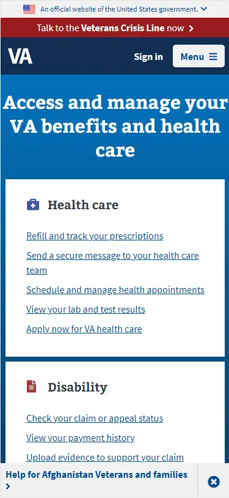
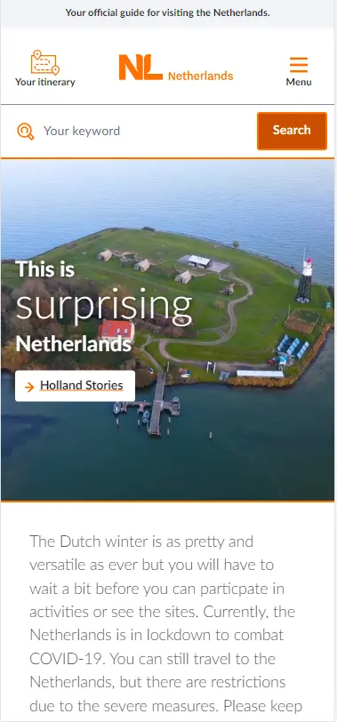
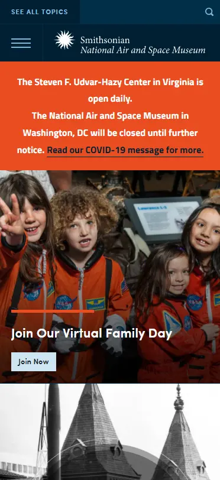

Design Principles Document
Jon Lanenga
P.A.R.C.: Repetition - VA.gov
The VA.Gov website has a lot of repitition on their website. There are four main blocks that are all laid out in a smiliar manner. This makes it easy for the reader since they can see that each section is a different menu. They would only have to navigate to the appropriate topic to find related links. The four main sections include Health care, Disability, Education, and Records.
Hick's Law - The Netherlands
This site is a simple stie to encourage peope to come visit the Netherlands. The site has a very basic and eye catching layout that givs the user only a few choices. They can either scroll down and view various topics, or click on the menu to see what other things the page will share.
P.A.R.C.: CONTRAST - Smithsonian National Air and Space Museum
The Smithsonian National Air and Space Museum homepage utilizes contrast well due to the contrasting colors in each section. It makes it clear to see where one section ends and another one starts.